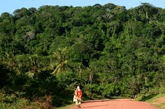

Visual Comparison: Nature vs City

This section presents a visual comparison between urban development and natural environments. The goal is to show how both spaces shape human experience differently. While cities show growth and innovation, nature shows environmental stability and calm living.
Story Through Images

Urban Environment
Cities represent opportunity, technology, and modern lifestyle. However they also create environmental pressure through pollution and congestion.

Natural Environment
Nature provides environmental balance, fresh air, and mental peace. Conservation ensures these benefits remain available for future generations.
Project Reflection
This digital storytelling project shows that development and conservation must exist together. The future depends on how well society balances environmental protection with urban expansion.
"The future of humanity depends on the balance between progress and preservation."
Public Opinion Section
This section allows viewers to share their thoughts about the relationship between city development and environmental conservation.
Sample Opinions
Student Perspective
Cities provide opportunity but we should protect green spaces inside urban areas.
Environmental View
Nature must be protected because development without sustainability creates long term environmental risks.
Balanced View
Urban growth is necessary but environmental policies must guide development decisions.